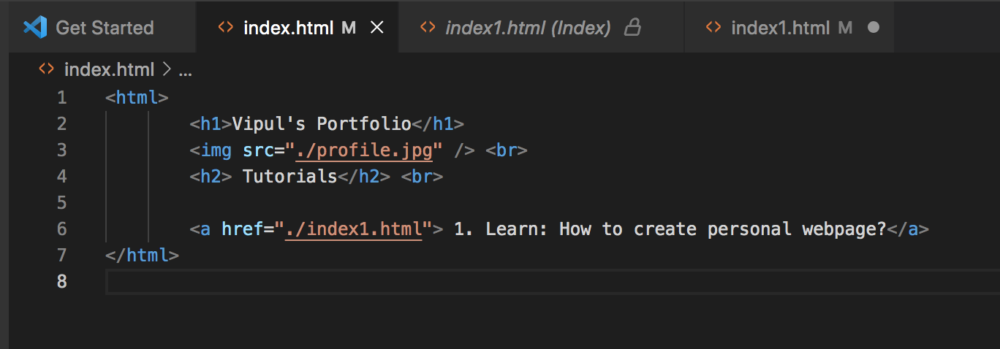

How to create your webpage using GitHub?
Step1: GitHub account
Sign up for free GitHub account at www.github.com
Step2: Creating repo
Once you are logged-in with created account in step1, create a new repository with a name of your choice: Repositories>New
Step3: Create simple webpage index.html
You can create this in VS Studio or text editor as below

Step4: Add your files
Either drag and drop or do file upload from github and upload your index.html and profile.jpg files
Step5: Commit your changes from GitHub, make it public (if want it live)
Step6: Well done! Your webpage should be up and accessible at "yourreporname.github.io"
1. Learn: How to create personal webpage?